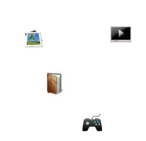
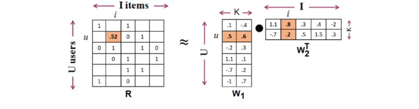

基于矩阵分解的推荐算法
Matrix Factorization算法是推荐系统（Recommendation System）的基础，本篇文章仅介绍一下基于矩阵分解的推荐系统是如何工作的以及Matrix Factorization算法，最后给出一个算法示例。内容比较浅显，深入算法原理还需要阅读更多的论文和资料。
推荐系统
简介
推荐系统是信息过滤系统的子集，系统任务便是预测用户接下来更可能想要查看的内容，也就是将特定的信息过滤出来提交给用户。这类算法主要应用于商业应用，比如：歌曲推荐、视频推荐、新闻推荐等。
推荐系统可以由很多算法实现，而基于用户/基于商品的Collaborative filtering是比较简单直接的。
数据源
举个线下的例子：
抛开算法，可以先思考一下，超市的售货员阿姨是怎么给你推荐商品的呢？
你是学生吗？买回去给谁用？需要买什么价位的？这类问题经常被问及…然后，售货员便根据用户信息来推荐你可能需要的商品了：我们这有xxx，价格xxx，好多学生都买…售货员的信息则是从大量的市场调研/工作经验中学习到的商品信息。
所以，一个推荐系统应该会同时包含用户信息和商品信息，回到线上，当很多用户在某个视频网站上观看电影后，会对电影打个分，除此之外，用户还有年龄、性别、行业、家庭关系等很多信息，这些都是用户信息；而视频本身也有自己的分类，比如：喜剧、动作等，此外还有票房、受众人群等信息，这些便组成了商品信息。
在推荐系统中，这些信息交织在一起，存放于一个大矩阵中，内容为用户对于每一个商品的评价打分，如下图所示（图片来自维基百科）：

需要注意的是，很多人是不点赞、不评论甚至对某些商品完全没有听说过，所以这个数据矩阵是一个巨大的稀疏矩阵，里面很多空白。将这些评价量化后，便得到一个数据源矩阵了。而推荐系统要做的便是从该矩阵中提取信息，为用户/新用户提供items推荐服务。
至此，应该了解到：
1.推荐系统基于大量的用户数据；2.数据是一个大型的稀疏矩阵，每一行/列表示某一用户（user）对所有商品（item）的打分信息，中间有很多很多空白处待填写。
算法策略
有了数据源矩阵之后，接下来要做的就是在矩阵空白的地方填写数字了，数字代表用户对某一个item的喜好程度，从而推荐用户可能打分比较高的item；如何在空白处填上合理的数字是基于矩阵分解方法的核心。下图示意了算法：$tag$

图片来自这里
如上图所示，将数据源矩阵分解成用户矩阵和商品矩阵，得到了用户A对每一个feature的喜好程度；又有每一个item对每一个feature的权重/偏置。那就可以重新构建一个新的没有空白的数据矩阵了，也就是将原来的空白地方进行了填充。但是这里还需要一个约束，根据用户矩阵和item矩阵计算得到的新的被填满的数据矩阵和原来有很多空白的数据源矩阵一定要基本一致（原有数据不能失真）。
需要注意的是，feature的数量k一般是少于user和itme数量的，所以最终如果仅存储用户矩阵和item矩阵，那会比存储数据源矩阵要节省很多存储空间。
Matrix Factorization
现在目标就很明确了，将大型稀疏矩阵分解成两个小矩阵，一个是user矩阵，一个是item矩阵。
矩阵分解算法有很多，使用场景也不相同，例如：QR分解在进行迭代计算时常常被使用；SVD分解在进行矩阵降维度，数据去燥方面用的比较多
算法原理和步骤
目标：
理论上，应该有类似QR、SVD分解这样的方法，去直接求解上式，考虑到上式是一个大型稀疏矩阵，常见的做法是直接使用梯度下降优化算法：
- 给定初始值：矩阵U和I，设定迭代次数和误差范围；
- 计算
- 计算二范数距离，这里加上正则化项也是极好的；
- 计算梯度 以及
- 更新参数以及
python示例
总结
- 为用户生成推荐内容；
- Matrix Factorization可以节省存储空间；
- 最重要的是数据处理。
Reference
- Covington, P., Adams, J., & Sargin, E. (2016, September). Deep neural networks for youtube recommendations. In Proceedings of the 10th ACM conference on recommender systems (pp. 191-198). ACM.
- http://www.albertauyeung.com/post/python-matrix-factorization/
- Thai-Nghe, N., Nhut-Tu, M., & Nguyen, H. H. (2017, April). An Approach for Multi-Relational Data Context in Recommender Systems. In Asian Conference on Intelligent Information and Database Systems (pp. 709-720). Springer, Cham.
- https://www.youtube.com/watch?v=ZspR5PZemcs&list=LLoCiddVQCg9ZvZoEa5d5wYw&index=23&t=4s
- https://www.youtube.com/watch?v=o8PiWO8C3zs
原文作者: kiddie92
原文链接: https://kiddie92.github.io/2019/06/10/Matrix-Factorization简介/
许可协议: 知识共享署名-非商业性使用4.0国际许可协议